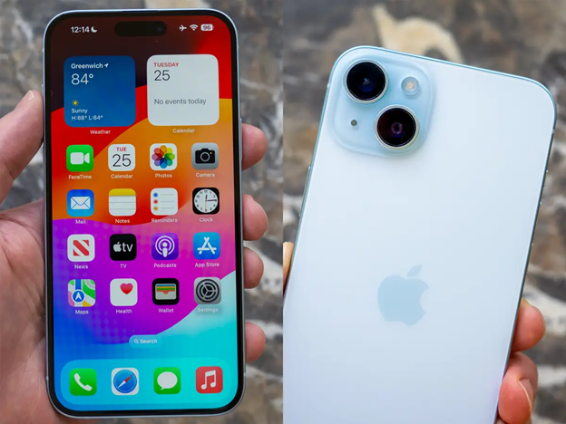

🍏 iOS: The Best Mobile Experience?
! Ecosystem Integration: Apple's "walled garden" approach allows for seamless integration between iPhones, iPads, Macs, and Apple Watches. This creates a smooth user experience where devices work together harmoniously. Features like Handoff, AirDrop, and iMessage exemplify this.
!! Software Updates and Security:Apple has direct control over iOS, so updates are typically released simultaneously to all compatible devices. This results in faster access to new features and security patches, reducing vulnerability to malware. Apple also has a strong reputation for prioritizing user privacy.
!!! User Experience and Consistency:iOS is known for its relatively simple and consistent user interface. This can make it easier for users to learn and navigate, even when upgrading to a new iPhone. The App Store also has strict guidelines, which can lead to a more curated and generally higher-quality app experience.
!!!! Enhanced Security and Privacy: iOS is renowned for its robust security measures, including strict app vetting processes and comprehensive privacy controls, offering users a more secure experience.
🤖 Android: More Customization, More Power?

ajsdfjkbasofjpaspias
asnfonaisodfdfoaspdmasd
iufusbdfoanfoiansofinasfbnoasf
Both platforms have their unique strengths, and the choice between iOS and Android often depends on individual preferences and priorities.